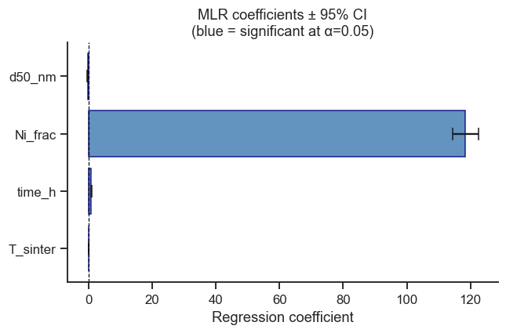
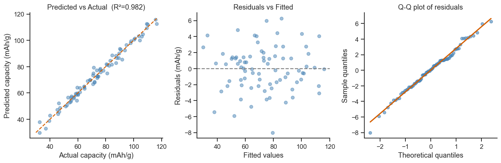

11. Multiple Linear Regression (MLR)#
MLR extends simple regression to multiple predictors:
In materials science, the response (e.g. capacity, strength, conductivity) typically depends on several synthesis or composition variables simultaneously.
Topics
Fitting an MLR model with statsmodels
Interpreting coefficients and p-values
Multicollinearity and VIF
Variable selection
Model diagnostics
Case study: Li-ion cathode capacity from four synthesis parameters
import warnings
import numpy as np
import pandas as pd
import matplotlib.pyplot as plt
import seaborn as sns
from scipy import stats
import statsmodels.api as sm
import statsmodels.formula.api as smf
from statsmodels.stats.outliers_influence import variance_inflation_factor
sns.set_theme(style='ticks', palette='colorblind')
plt.rcParams.update({'figure.dpi': 110, 'font.size': 11})
rng = np.random.default_rng(21)
11.1 Generate Synthetic Dataset#
Synthesis conditions for an NMC cathode material:
T_sinter— sintering temperature (°C)time_h— sintering time (h)Ni_frac— Ni fraction in NMC formulad50_nm— median particle size (nm)
n = 80
T_sinter = rng.uniform(700, 900, n)
time_h = rng.uniform(4, 20, n)
Ni_frac = rng.uniform(0.3, 0.85, n)
d50_nm = rng.uniform(5, 30, n)
# True model (unknown to the analyst)
cap_true = (80
+ 0.12 * (T_sinter - 800)
+ 0.8 * (time_h - 12)
+ 120 * (Ni_frac - 0.6)
- 0.4 * (d50_nm - 15)
+ 0.001 * (T_sinter - 800) * (Ni_frac - 0.6) * 100) # small interaction
capacity = cap_true + rng.normal(0, 3, n)
df = pd.DataFrame({
'T_sinter': T_sinter, 'time_h': time_h,
'Ni_frac': Ni_frac, 'd50_nm': d50_nm,
'capacity': capacity,
})
print(df.describe().round(2))
T_sinter time_h Ni_frac d50_nm capacity
count 80.00 80.00 80.00 80.00 80.00
mean 795.99 12.43 0.55 17.87 73.25
std 59.02 4.84 0.16 7.28 20.76
min 700.05 4.10 0.31 5.17 32.54
25% 740.31 8.48 0.44 12.42 58.09
50% 796.96 13.41 0.51 18.02 72.01
75% 842.06 16.31 0.69 24.01 88.38
max 898.55 19.97 0.85 29.51 116.58
11.2 Fitting the MLR Model#
model = smf.ols('capacity ~ T_sinter + time_h + Ni_frac + d50_nm', data=df).fit()
print(model.summary())
OLS Regression Results
==============================================================================
Dep. Variable: capacity R-squared: 0.982
Model: OLS Adj. R-squared: 0.982
Method: Least Squares F-statistic: 1051.
Date: Tue, 01 Sep 2026 Prob (F-statistic): 5.29e-65
Time: 17:42:00 Log-Likelihood: -193.92
No. Observations: 80 AIC: 397.8
Df Residuals: 75 BIC: 409.8
Df Model: 4
Covariance Type: nonrobust
==============================================================================
coef std err t P>|t| [0.025 0.975]
------------------------------------------------------------------------------
Intercept -88.9943 4.522 -19.679 0.000 -98.003 -79.985
T_sinter 0.1175 0.005 21.770 0.000 0.107 0.128
time_h 0.8037 0.066 12.115 0.000 0.672 0.936
Ni_frac 118.4657 2.018 58.690 0.000 114.445 122.487
d50_nm -0.3528 0.044 -8.070 0.000 -0.440 -0.266
==============================================================================
Omnibus: 0.711 Durbin-Watson: 1.460
Prob(Omnibus): 0.701 Jarque-Bera (JB): 0.373
Skew: -0.156 Prob(JB): 0.830
Kurtosis: 3.120 Cond. No. 1.15e+04
==============================================================================
Notes:
[1] Standard Errors assume that the covariance matrix of the errors is correctly specified.
[2] The condition number is large, 1.15e+04. This might indicate that there are
strong multicollinearity or other numerical problems.
Take-home message
R²=0.982 says the four synthesis parameters together explain 98.2% of the variation in capacity — Ni_frac’s coefficient (118.5) dwarfs the others because it is reported per whole unit of a variable that only ranges over about 0.5 (0.3–0.85); raw coefficients are not directly comparable across predictors with different natural scales — Exercise 2 (standardised coefficients) is exactly how to make that comparison fair.
All four p-values are effectively zero, so every predictor earns its place in the model — but notice the “Cond. No. is large, 1.15e+04” warning at the bottom despite that. This is a scale artefact, not multicollinearity:
T_sintersits around 700–900 whileNi_fracsits around 0.3–0.85, and condition number is sensitive to that raw magnitude gap, not just correlation between predictors. Section 11.3’s VIF check below is the correct tool for distinguishing this from genuine collinearity.
# Coefficient plot with 95% CI
coeff_df = pd.DataFrame({
'coef': model.params,
'lower': model.conf_int()[0],
'upper': model.conf_int()[1],
'p': model.pvalues,
}).drop('Intercept')
coeff_df['significant'] = coeff_df['p'] < 0.05
fig, ax = plt.subplots(figsize=(6, 4))
colors = ['steelblue' if s else 'lightgray' for s in coeff_df['significant']]
ax.barh(coeff_df.index, coeff_df['coef'], xerr=[
coeff_df['coef'] - coeff_df['lower'],
coeff_df['upper'] - coeff_df['coef']
], color=colors, capsize=5, edgecolor='navy', alpha=0.85)
ax.axvline(0, color='black', lw=0.8, ls='--')
ax.set_xlabel('Regression coefficient')
ax.set_title('MLR coefficients ± 95% CI\n(blue = significant at α=0.05)')
sns.despine(ax=ax)
plt.tight_layout()
plt.show()

11.3 Multicollinearity and VIF#
When two predictors carry almost the same information (here, T_sinter in
°C and a near-duplicate T_K in Kelvin), the regression can no longer tell
which one deserves credit for an observed effect — infinitely many splits of
“credit” between the two fit the data equally well, so their individual
coefficients become unstable and untrustworthy, even if the model’s overall
predictions stay fine. The Variance Inflation Factor (VIF) catches this
by checking how well each predictor can itself be predicted from all the
other predictors (Section 2 of the theory page):
VIF < 5: acceptable
VIF 5–10: moderate concern
VIF > 10: severe multicollinearity — one of the redundant predictors should be removed, combined with the other, or the model should switch to a latent-variable method (PCA/PLS, later in this part) built to handle correlated predictors gracefully.
# Add a highly correlated variable to demonstrate VIF
df['T_K'] = df['T_sinter'] + 273.15 # near-perfect correlation with T_sinter
X_demo = sm.add_constant(df[['T_sinter', 'time_h', 'Ni_frac', 'd50_nm', 'T_K']])
# T_sinter and T_K are (deliberately) perfectly collinear, so the auxiliary
# regression behind their VIF has R²=1 exactly -- 1/(1-R²) is a genuine
# divide-by-zero here, not a bug, and numpy correctly returns inf for it.
# The resulting infinite VIF is the actual point of this cell (see the
# take-home message below), so the expected RuntimeWarning is suppressed
# rather than left to look like something went wrong.
with warnings.catch_warnings():
warnings.filterwarnings('ignore', message='divide by zero encountered',
category=RuntimeWarning)
vif_data = pd.DataFrame()
vif_data['Variable'] = X_demo.columns
vif_data['VIF'] = [variance_inflation_factor(X_demo.values, i)
for i in range(X_demo.shape[1])]
print('VIF with collinear variable T_K:')
print(vif_data.to_string(index=False))
# Clean VIF (remove T_K)
X_clean = sm.add_constant(df[['T_sinter', 'time_h', 'Ni_frac', 'd50_nm']])
vif_clean = pd.DataFrame({
'Variable': X_clean.columns,
'VIF': [variance_inflation_factor(X_clean.values, i) for i in range(X_clean.shape[1])]
})
print('\nVIF without T_K (clean model):')
print(vif_clean.to_string(index=False))
VIF with collinear variable T_K:
Variable VIF
const 0.000000
T_sinter inf
time_h 1.021113
Ni_frac 1.026278
d50_nm 1.004094
T_K inf
VIF without T_K (clean model):
Variable VIF
const 205.495019
T_sinter 1.006316
time_h 1.021113
Ni_frac 1.026278
d50_nm 1.004094
Take-home message
With
T_Kincluded, both its VIF andT_sinter’s VIF are infinite — exactly the signature of perfect collinearity (°C and K differ only by a constant shift, so one is completely predictable from the other). OnceT_Kis removed, every real predictor’s VIF drops to about 1.0–1.03 — comfortably under the “acceptable” threshold of 5, confirming the original four-predictor model in Section 11.2 never had a multicollinearity problem in the first place.Notice
const’s VIF is 205 in the clean table — ignore it. A high VIF on the intercept term is expected and not meaningful (it reflects how far the predictors’ means sit from zero, not collinearity between predictors); only the VIFs of the actual variables of interest matter for this diagnostic.
11.4 Model Diagnostics#
fitted_vals = model.fittedvalues
residuals = model.resid
fig, axes = plt.subplots(1, 3, figsize=(12, 4))
# Predicted vs Actual
axes[0].scatter(df['capacity'], fitted_vals, alpha=0.5, color='steelblue', s=30)
lims = [min(df['capacity'].min(), fitted_vals.min()),
max(df['capacity'].max(), fitted_vals.max())]
axes[0].plot(lims, lims, 'r--', lw=1.5)
axes[0].set_xlabel('Actual capacity (mAh/g)')
axes[0].set_ylabel('Predicted capacity (mAh/g)')
axes[0].set_title(f'Predicted vs Actual (R²={model.rsquared:.3f})')
sns.despine(ax=axes[0])
# Residuals vs Fitted
axes[1].scatter(fitted_vals, residuals, alpha=0.5, color='steelblue', s=30)
axes[1].axhline(0, ls='--', color='gray')
axes[1].set_xlabel('Fitted values')
axes[1].set_ylabel('Residuals (mAh/g)')
axes[1].set_title('Residuals vs Fitted')
sns.despine(ax=axes[1])
# Q-Q
(osm, osr), (slope_qq, int_qq, _) = stats.probplot(residuals)
axes[2].plot(osm, osr, 'o', color='steelblue', alpha=0.6, ms=5)
x_qq = np.array([osm.min(), osm.max()])
axes[2].plot(x_qq, slope_qq*x_qq+int_qq, 'r-', lw=2)
axes[2].set_title('Q-Q plot of residuals')
axes[2].set_xlabel('Theoretical quantiles')
axes[2].set_ylabel('Sample quantiles')
sns.despine(ax=axes[2])
plt.tight_layout()
plt.show()
# Performance metrics
rmse = np.sqrt(np.mean(residuals**2))
print(f'R² = {model.rsquared:.4f}')
print(f'Adj. R² = {model.rsquared_adj:.4f}')
print(f'RMSE = {rmse:.4f} mAh/g')
print(f'AIC = {model.aic:.2f}')

R² = 0.9825
Adj. R² = 0.9815
RMSE = 2.7321 mAh/g
AIC = 397.84
Take-home message
R²=0.982 (Section 11.2) and RMSE=2.73 mAh/g together answer two different questions: R² says the model explains 98% of the variation, RMSE says a typical prediction is off by about 2.7 mAh/g in the original units — the second number is usually the one worth quoting to someone who has to act on the prediction (“expect to be within about 3 mAh/g”).
Adjusted R² (0.982) sitting almost exactly on top of R² (0.982) is a good sign: adjusted R² penalises each extra predictor, so a big gap between the two would suggest some predictors are adding little beyond noise. Here, all four clearly pull their weight.
Interpreting the Diagnostic Plots#
Three diagnostic plots are standard for checking whether MLR assumptions are met:
Predicted vs Actual
Points should scatter symmetrically around the 1:1 line (red dashed). The R² value quantifies the fraction of variance in capacity explained by the model.
Systematic deviations (points consistently above or below at certain predicted values) indicate a non-linearity that the linear model misses.
Residuals vs Fitted
Residuals should scatter randomly around zero with uniform spread (homoscedasticity). A funnel shape (increasing spread at higher fitted values) indicates heteroscedastic variance — consider a log or square-root transform of the response.
Any curved pattern (U-shape) suggests a missing quadratic term.
Q-Q plot of residuals
Points should fall close to the red reference line if residuals are normally distributed — a key assumption for valid t-tests and confidence intervals on coefficients.
Heavy tails (S-curve) or a single outlier far from the line are common in small samples and may warrant investigation.
Exercises#
Interaction term: Add an interaction
T_sinter:Ni_fracto the model. Does the R² improve significantly? Check AIC to compare models.Standardised coefficients: Standardise all predictors to zero mean and unit variance before fitting. The coefficients then represent the change in response per standard-deviation change in each predictor — which factor has the largest effect?
Cross-validation: Split the data 80/20 train/test using scikit-learn’s
train_test_split. Fit the MLR model on the training set and compute RMSE on the test set. How does it compare to the in-sample RMSE?